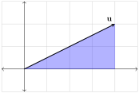

Exploration 1.4.1.
Consider vector \(\mathbf{u}=\begin{bmatrix}4\\2\end{bmatrix}\text{.}\) We will find an algebraic approach for multiplying \(\mathbf{u}\) by \(\frac{1}{2}\text{.}\)

Consider \(\mathbf{u}\) to be the hypotenuse of a right triangle.

The head of \(\frac{1}{2}\mathbf{u}\) should be the midpoint of the hypotenuse.

From our study of similar triangles in geometry, we know that if we drop perpendiculars from the midpoint of the hypotenuse to the two legs of the triangle, the perpendiculars will bisect the legs.

This tells us that to find \(x\) and \(y\) components of \(\frac{1}{2}\mathbf{u}\) we must multiply each component of \(\mathbf{u}\) by \(\frac{1}{2}\text{.}\)
\begin{equation*}
\frac{1}{2}\mathbf{u}=(1/2)\begin{bmatrix}4\\2\end{bmatrix}=\begin{bmatrix}(1/2)(4)\\(1/2)(2)\end{bmatrix}=\begin{bmatrix}2\\1\end{bmatrix}
\end{equation*}